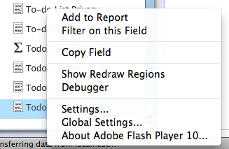
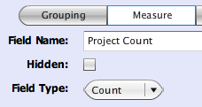

Basecamp
Table of Contents
- How do I connect to Basecamp?
- What fields are available for reporting?
- How do I build a simple report on Basecamp data?
- How do I embed Easy Insight reports into my Basecamp page?
- How much does Easy Insight reporting on Basecamp cost?
- How do I measure the number of projects?
How do I connect to Basecamp?
First, you need an Easy Insight account! If you don't already have an account, you can create one by clicking here. Once you've created an account, you'll either be taken directly to the Highrise connection page or to the standard application landing page. From the standard application landing page, you can install a connection to Basecamp by clicking over to the Connections page, clicking on the Basecamp button, and clicking on Get Started Now.
You'll need to enable API access to your Basecamp account. You can enable this access from the Account (Upgrade/Invoice) page of your Basecamp account. If this option is unavailable, you may need to contact your Basecamp administrator.
At this point, you'll be prompted for your Basecamp path and your API token. You can find your API token under the My Info page on your Basecamp interface. Once you click Create, Easy Insight will begin synchronizing key aggregate data from your Basecamp account into the Easy Insight data warehouse. Depending on the size of your Basecamp instance, this process may take a while--if you have hundreds of projects and thousands of todo items, it might be several minutes to copy all of the necessary data across. Once synchronization is complete, a wizard will walk you through an initial scorecard and next steps with the data source.
What Basecamp data is available for reporting?
You can report on Todo Items, Time Tracking, Comments, and Companies.
How do I build a simple report on Basecamp data?
Once you have a connection between Easy Insight and Basecamp, you can build reports through the Report Editor. Start by clicking Create New Report on the Home page. From there, open up the Todo folder on the left hand side of the screen. Drag Milestone into the canvas to the right--after a moment, you should see a list of milestones. Drag in Todo Count and you'll see the sum of todo items grouped up by milestone.
For further information, look at the report editor documentation at http://www.easy-insight.com/documentation/reportediting.html or watch this screencast.
How do I embed Easy Insight reports into my Basecamp page?
A longer explanation is coming, but you can check out the screencast at http://www.youtube.com/watch?v=XISV8DLN2XA for a video demonstration of the functionality.
How much does Easy Insight reporting on Basecamp cost?
The Basic package for Easy Insight reporting on Basecamp costs $25/month. This package gives you support for five users. The Plus package costs $75/month and gives you unlimited users.
How do I measure the number of projects?
You may find yourself wanting to build a report which provides a view like "How many projects are open per customer?" There's no Project Count measure by default, so you'll need to create one.
To create this custom measure, start by right clicking on the Todo - Project Name field in the left hand list of fields in the report editor. This action will open up a context menu with a number of options. Choose the Copy Field option from the context menu. This will pop up the field editor for the newly copied field.
At first, the field editor is showing you the default Grouping form of the project name. Click on the Measure button in the bar, as shown to the left. Rename the field to something more appropriate, as we've done here with Project Count. Finally, change the field type from Sum to Count--you want this field to show the number of projects.
Once this field is saved, you can build the final report. Drag in Company Name from the Company folder, then drag in the newly created Project Count field. The resulting report provides you with a view of the number of projects summarized in terms of associated customer.